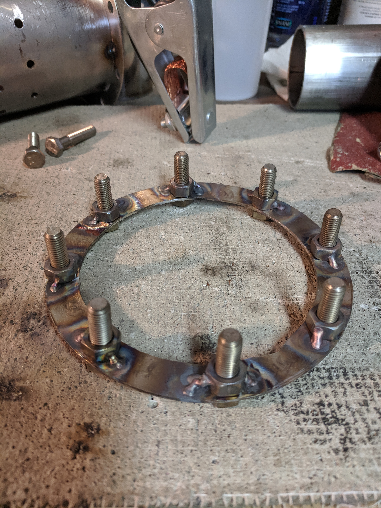
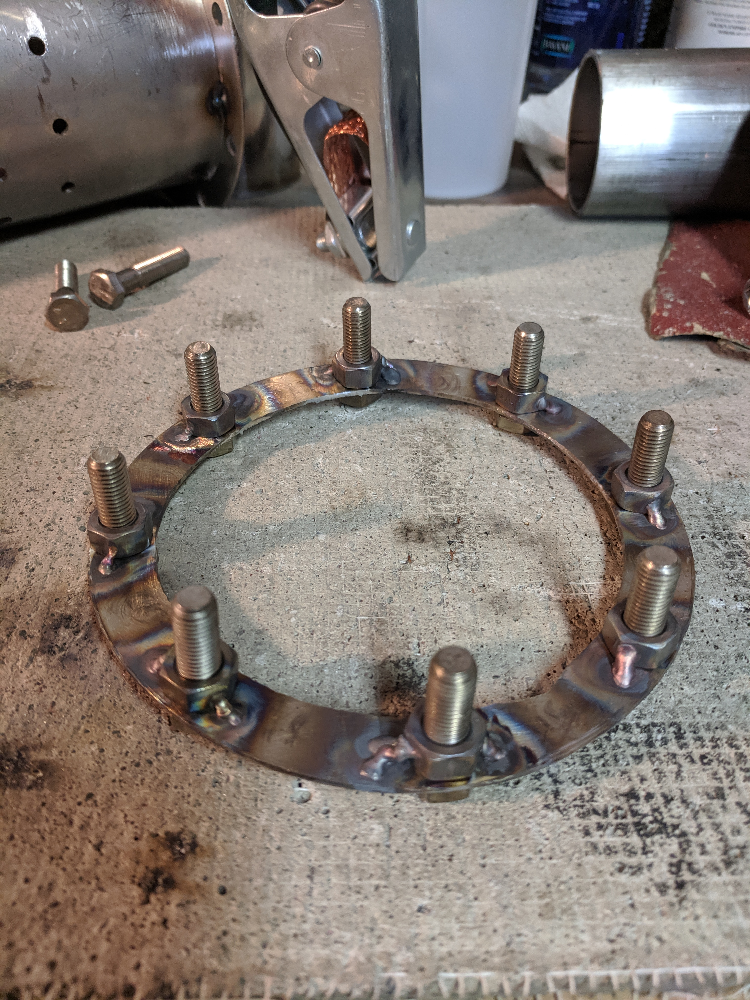
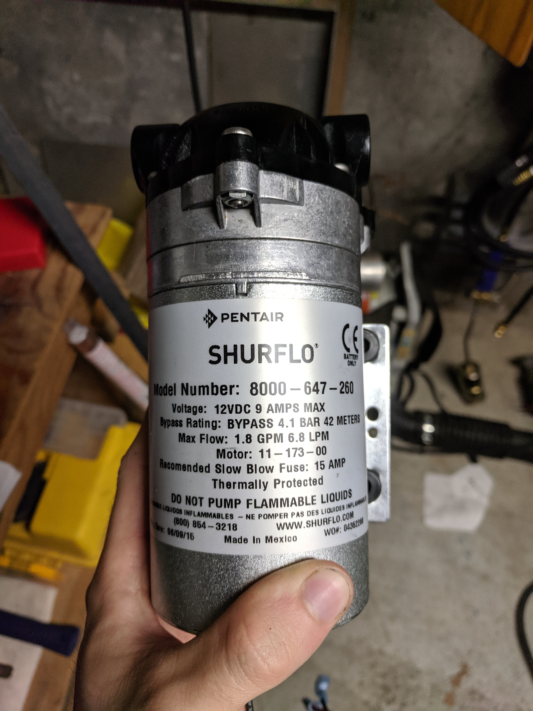
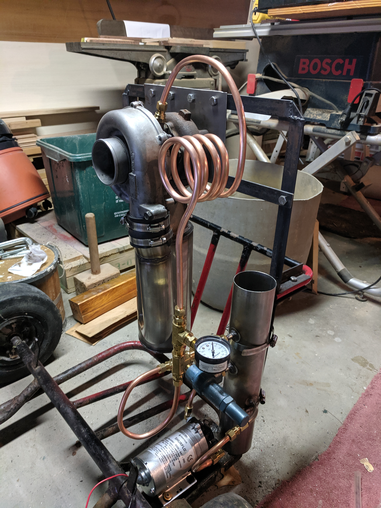
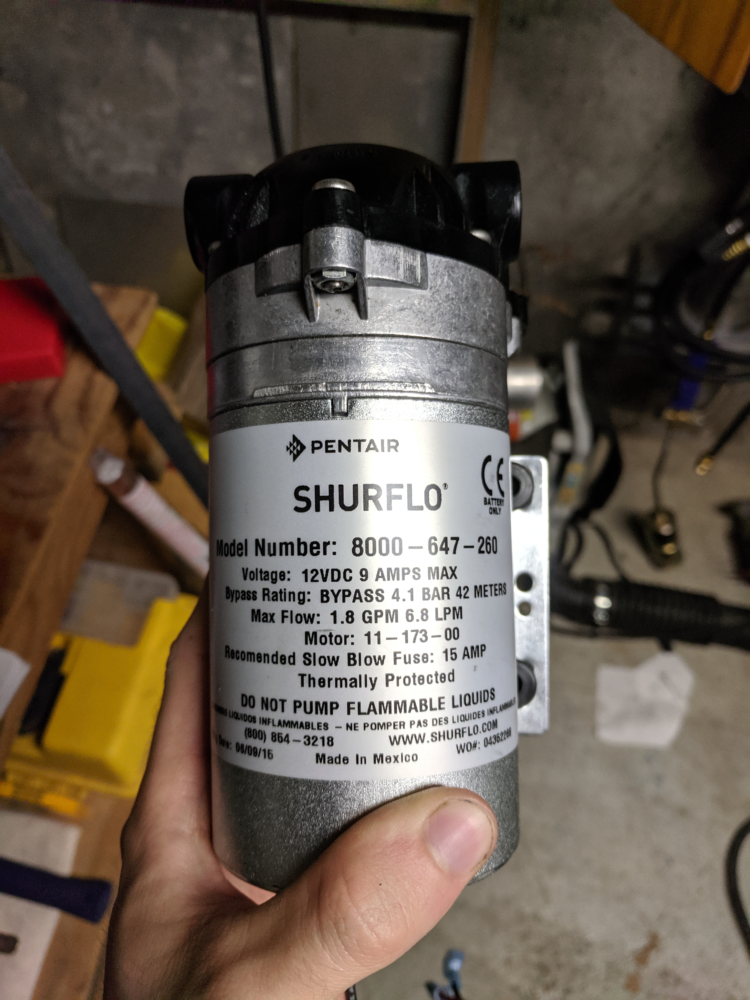
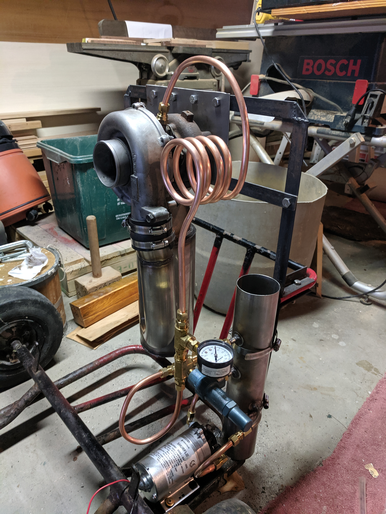

Turbo Jet Engine
Inspired by YouTuber Colin Furze, this turbojet project uses a junkyard turbocharger, a custom stainless steel combustion chamber, and a homebuilt oil system. Propane serves as the fuel source. Below is an overview of each subsystem:
TurbochargerThe turbocharger was acquired first, since the combustion chamber’s geometry depends on its inlet diameter. It intakes air, compresses it, and directs it into the combustion chamber. Exhaust gases spin the exit turbine, which is linked to the intake via a turboshaft. Once primed with a leaf blower, the continuous combustion cycle sustains turbine rotation.
Combustion ChamberBuilt from 1/16" 304 stainless steel, the chamber mixes intake air and propane fuel in a vortex pattern. Ignition (via spark plug or open flame) initiates continuous combustion, driving exhaust gases through the turbine to generate thrust.
Oil SystemThe oil loop includes a reservoir, pump, electronic controller, motorcycle battery, blowoff valve, needle valve, and pressure gauge. Oil lubricates and cools the turboshaft before cycling back to the reservoir. Pressure is regulated electronically with safety relief provided by the blowoff and needle valves. A schematic of this system is shown in the manufacturing gallery.
Manufacturing Process Gallery
 



 


